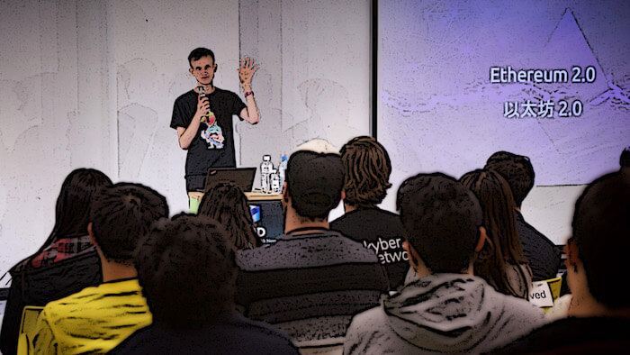
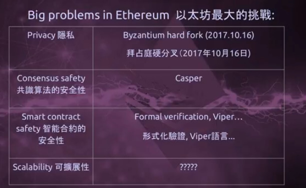
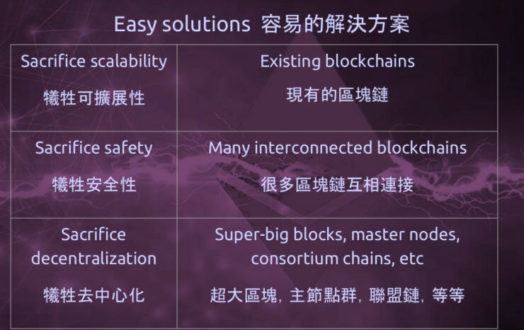
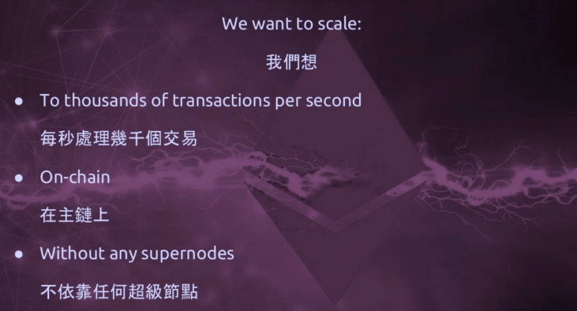
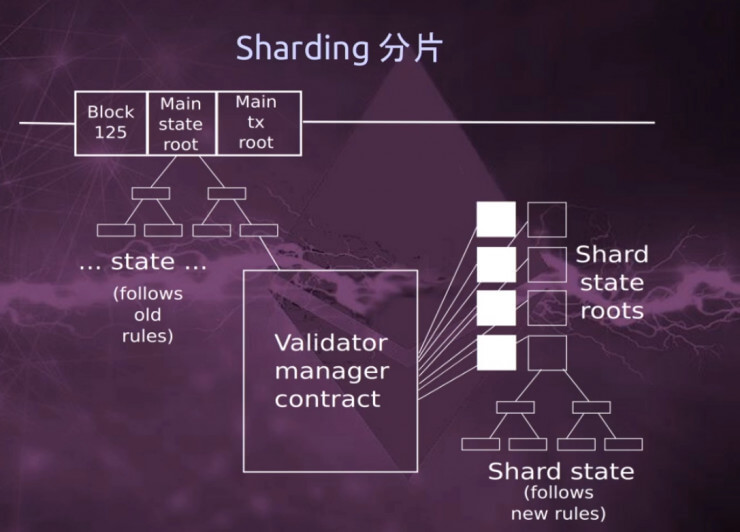
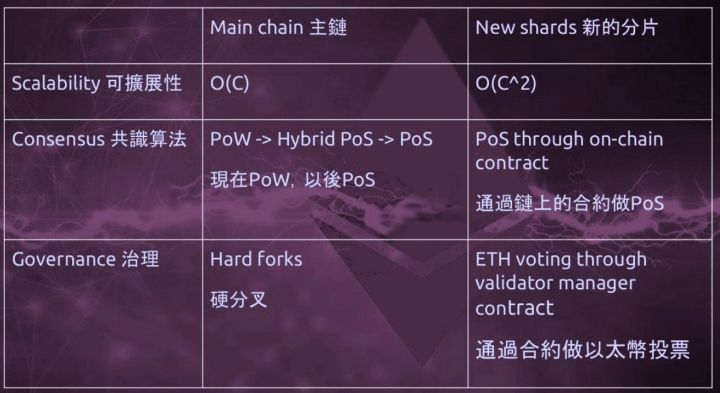
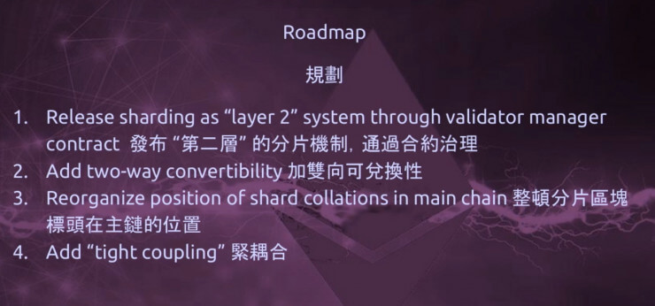
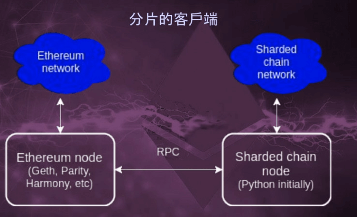
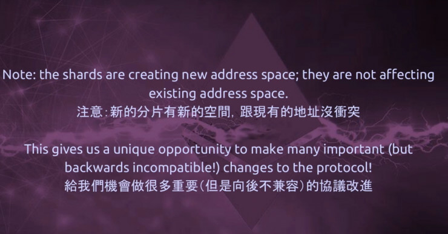
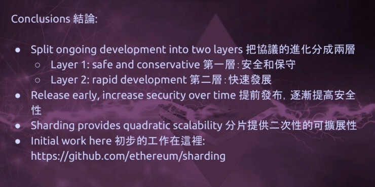

Vitalik 公布以太坊 2.0 路线图：通过二次分片来匹配Visa交易规模
“能消灭以太坊的将是以太坊本身，以太坊在中国大陆仍旧是以太坊，但在台湾，以太坊2.0将从这里开始诞生。”
近日，Beyond Block 2017会议在台北举行。以太坊联合创始人Vitalik Buterin在开幕发言时说道，“能消灭以太坊的将是以太坊本身，以太坊在中国大陆仍旧是以太坊，但在台湾，以太坊2.0将从这里开始诞生。”在这里，他公布了以太坊在未来三至五年内的交易规模扩容计划，以期能达到Visa级别的交易规模。
Buterin表示，目前的以太坊平台需要改进四个方面，这四个方面分别为隐私、共识安全、智能合同安全和可扩展性。
对于前三个方面，以太坊联合创始人都看到了一个正在积极发展的解决方案。但是，缩放的问题是相当大的。Vitalik解释道，分权，可扩展性和安全性是一个复杂的三连胜，将来可能会面临重大挑战。虽然三者中的任何两个创建一个三个都可用的系统相对比较容易，但事实证明这是困难的。
根据Buterin的说法，以太坊的可扩展性需要每秒数千次的交易，只能在链上，没有任何超级节点。换句话说，它必须处理所有三个问题。根据Vitalik的解决方案，可以在分片中找到或者允许侧链进行协议更改，同时保持主链完整。
从工作证明到证明利益的变化将是一个要求，Buterin表示，尽管他认为在短期内发生了大量的变化，但可能仍需要三到五年的时间，因为这些升级已开始形成。
关于隐私性
Vitalik Buterin介绍道，以太坊最新的升级中涉及到了一些十分“有趣”的新型虚拟货币密码算法，包括零知识证明和环签名，它们本身不能够解决隐私问题，却可以为编码工具提供解决途径。
“以太坊隐私性的问题已经被解决了四分之三了，但还有四分之一没有解决，”Vitalik Buterin这样说道。他称，在基础协议层面存在着漏洞。但至少在概念上，他认为在基础层面的漏洞能够或者已经被修复了，就目前来看，用户在以太坊里能够隐藏所有的交易，同时也能选择性地显示包含在交易中的人。
三重困境
而关于安全性，Vitalik Buterin认为这并不是一个已被彻底解决的问题，仅仅只能根据事件大小来定义该问题的严重性。但是，能够被解决的问题则是可扩展性。
无论如何，在当前，以太坊陷入了去中心化、安全性和扩展性的三重困境。“三者之中选二相对容易很多”，他称，并列举了目前通用的三选二的折中方案：
他指出，现有的区块链应用，如以太坊和比特币，牺牲了它们各自的可扩展性，而如果为了追求规模设置10GB大小的大型区块，则会与去中心化的设计理念背道而驰。
可是，Vitalik Buterin称，以太坊现在的努力目标就是要三者得而兼之而不失其一。其中一条解决途径就是使用设置双层基础架构，如闪电网络、雷电网络（Raiden）和扩容方案Plasma。以太坊将致力于如何在链上解决去中心化、安全性和扩展性的这三重困境。
Vitalik Buterin透露，以太坊接下来将主攻在不考虑使用大型节点甚至集团型节点、努力避免中心化趋势的前提下，实现每秒数以千计交易量的链上扩容优化。为此，他提出了第一个处在概念化基础的分片方案。
“笼统简单地来说，你可以把分片看成是，设置一个区块链，在其中有一百个各自不同的宇宙，每一个宇宙都是一个独立的账户空间。所以你可以在某个宇宙中拥有一个账户，也可以在数个宇宙中持有一个合约，当然，你还可以在数个宇宙间发起一笔交易，而这笔交易仅仅会对涉及到的这几个宇宙产生影响。”
Vitalik Buterin对此补充道，“在这些宇宙中，可能会产生越来越多的交易数据、关于交易的协议，但可以对它们的大小进行限制，比如通过异步处理，使得有大概有两个星期左右的延迟。总的来说，跨宇宙间的交易和操作不会像在单独一个宇宙中那么便捷和简约。”
他对此作了进一步的解释：“但是，这一百个宇宙不仅仅是割裂分散的区块链，它们在内部相互联系并组成系统。特别值得注意的是，它们彼此间形成共识。所以如果要打破其中一个宇宙，你就必须打破这一个整体。”
在以太坊的实际运作中，Vitalik Buterin描述的该分片设想该如何执行？他举了一个例子，“在未来的升级优化中，我们在以太坊中保留主链，而在主链中我们发布一个合约，将之称为‘验证管理合约’，我们用这个合约来维护权益证明（PoS）的系统。”
他继续谈道，“这个验证管理合约还能追踪一系列的分片，也就是上述我们提到的这一百个宇宙。在每一个宇宙中，这个验证管理合约都能分配分片上的验证程序以权限来创造下一个区块或者分片。”
在现有区块上，他称，“每一个分片中都有区块和交易流程，但我们不打算将这些区块或交易都同步到主链上。作为替代，我们打算采取与现在一样的结构体系，就是使用一个小标题来指代一个大型区块。”
而关于分片，Vitalik Buterin透露，他们打算采用“排序”（collation）的办法来处理，“每一个序列都是一组交易的集合，它有一个序列的标题，标题基本都是以区块权益证明签名来标识，并插入进上述提到的验证管理合约中去。但与此同时，所有分片中实际发生的交易、所有的分片及分片中的序列，都将以链下的形式保存。”
Vitalik Buterin展望未来，称这就是新旧世界之分：“在旧的世界里，你只能停留在可扩展性有限的操作级别，在其中，每笔交易都受限，原因在于它们都需要被复制到由运行在线上运行的节点里。”
“而在未来的新世界，引入了二次扩展性（quadratic scalability）这一全新规则，在其中，通过节点验证确定的分片，并作为‘轻量级的客户’（light clients）来处理其他分片，这将使得新的世界具有更高级别扩展性的潜力。而这，都将建立在分片如何被应用或逐步被验证的基础上。”
Vitalik Buterin称，这一切还处在分片的起步阶段，而未来的路该怎么走？他公布了这样一个路线图，并称最终将通过“紧密耦合”（tight coupling）来将其纳入到协议层面。
这意味着，以太坊的网络将得到升级，使得其中的用户能够执行遵守这样一项规则：“如果一个区块链包含了一个无效的分片标题（sharding hinder），那么这整个区块链都是无效的。”
“所以基本上，通过紧密耦合，第二层架构成为了第一层架构有效性的保证和先决条件，”Vitalik Buterin对此解释道，“无论是在分片系统中的哪一层，它们都在相同的安全等级之下，而整个系统都将通过硬分叉的方式进行整治改造。”
Vitalik Buterin还称，在一开始，在以太坊中，不同的节点将会以不同的速度独自运行，同时还有一个分片节点与之相连。到了最后，当网络发生紧密耦合之后，节点也将会进行合并。
他说，新的分片创造了新的储存地址的空间，这意味着它不会对正常的交易和网络环境造成影响。
而对于开发者而言，Vitalik Buterin说。“允许开发者们进行重要的创新开发措施”，“分片方案将使得他们更加自由地在各分片上进行操作和实施改进。”
最后，他表示，主链在未来有升级的必要性，“但我们并不急于做这件事，原因在于无需为了‘升级’不断地实施不兼容的升级措施而引致冲突，最终拖慢整个区块链的速度。”
如上所述，按照Vitalik Buterin的设想，以太坊将同时驶入两条不同速度的轨道，来实施变革，直至最终两条轨道合并成一条道路。随着开发人员们在全新的分片上的努力和尝试，逐步改进代码，数据共享和交流的能力将被不断增强，而这些都是在每一个微小的进步中不断积累的。
这个时间将会持续三到五年，直至2020年左右。但最为困难的那部分，整体架构，在概念层面上逐步确定下来了，Vitalik Buterin透露，我们最快能在2019年甚至明年看到这个实际模型的初始版本。
文章来源参考：https://www.leiphone.com/news/201711/N3ki9u5HssqFSmrB.html http://www.chainknow.com/detail/334.html
【声明：文章为作者独立观点，不代表UNITIMES官网立场。欢迎转载，转载请务必注明来源。如有不当之处请多指教】